על-מוליכים
וחיות אחרות?
מרצה: רונן אברבנאל
פסטיבל איקון 2015 - הרפתקאות
השנה היא 2015
השנה היא 2015
על מוליכים?

הולכה חשמלית
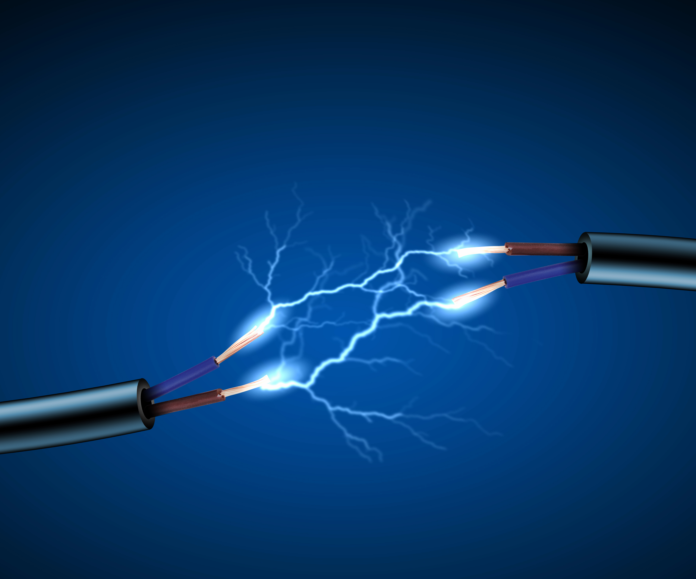הולכה חשמלית
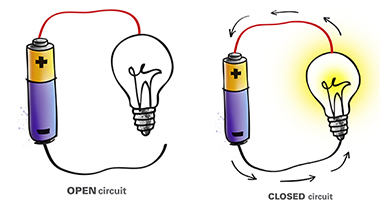מבנה האטום
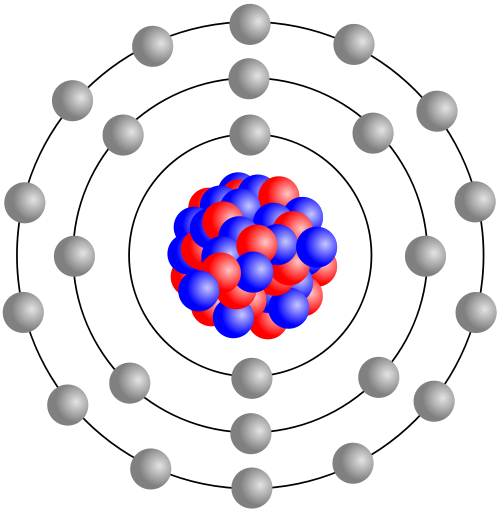- גרעין - פרוטונים וניוטרונים. טעון חיובית
- אלקטרונים טעונים שלילית
אטומים במתכת
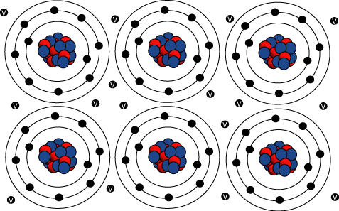אטומים במתכת - יונים ואלקטורנים חופשיים
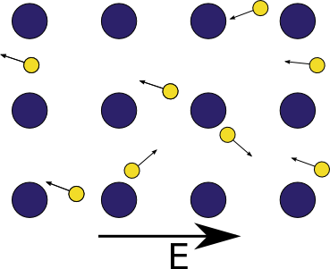אלקטרונים חופשיים - בשדה חשמלי
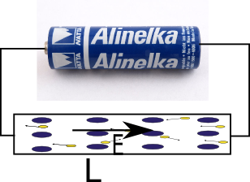התנגדות חשמלית
התנגדות חשמלית - למה זה טוב?
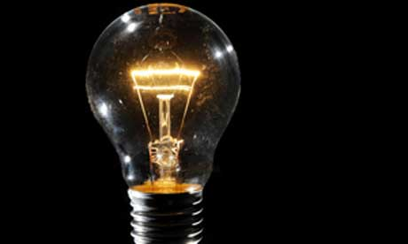 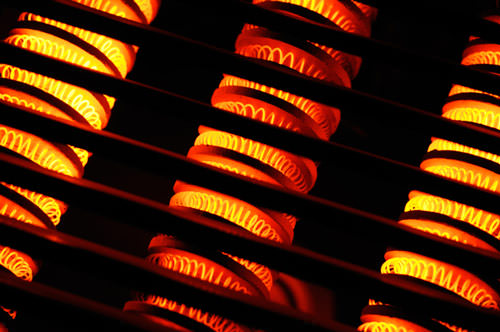התנגדות חשמלית - למה זה רע?
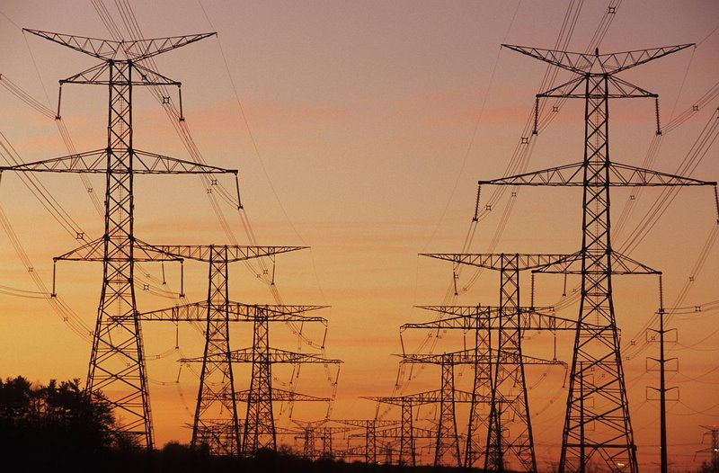 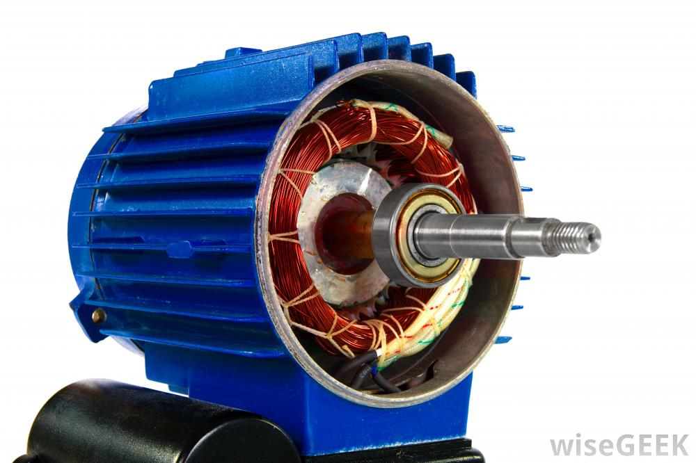התנגדות חשמלית
אז אולי אפשר בלי?
על-מוליכות
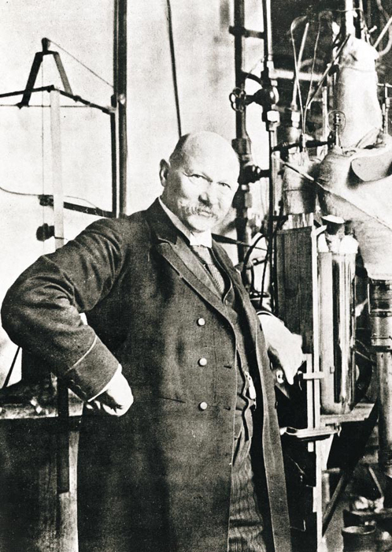על מוליכות
אבל למה זה עובד?
בוזונים ופרמיונים
ספין - תכונה יסודית של חלקיקים. מספר שלם או חצי שלם
אפשר לחבר ספינים!
- בוזונים - חלקיקים עם ספין שלם.
פוטונים
- פרמיונים - חלקיקים עם ספין חצי-שלם
אלקטרונים, ניוטרונים.
בוזונים ופרמיונים - דוגמאות
הליום 3 והליום 4
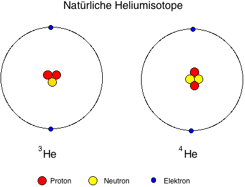
אם היו לנו זוגות של אלקטרונים, אז כל זוג כזה היה בוזון!
משיכה בין אלקטרונים - זוגות קופר
זרם ללא התנגדות
אפקט מייזנר
על מוליך מונע חדירה של שדה מגנטי

קיבוע של קווי שטף
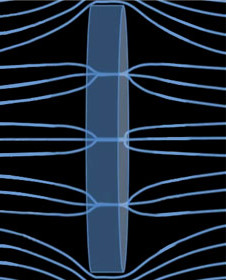ריחוף!
טמפרטורות נמוכות וטמפרטורות גבוהות
- על מוליכים בטמפרטורות נמוכות
- על מוליכים בטמפרטורות גבוהות
חומרים פשוטים. מתכות
מעלות קלווין בודדות
חומרים מורכבים. קרמיים
כמאה מעלות קלווין
(-200 C)
שימושים לעל מוליכים
בימנו...
(אלקטרו) מגנטים חזקים
שימושים לעל מוליכים
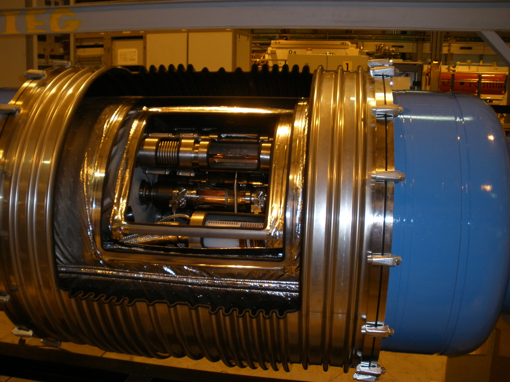שימושים לעל מוליכים
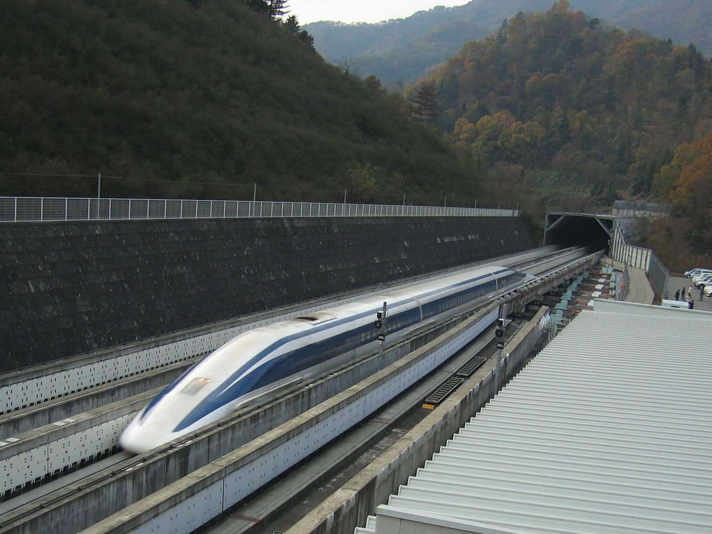בעתיד?
או לפחות, כשיהיו לנו על-מוליכים בטמפרטורת החדר...
ובמדע בדיוני
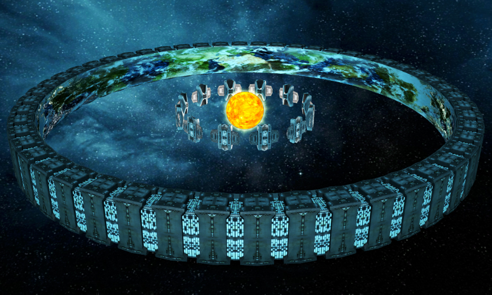על מוליכים זה מגניב.
שאלות פתוחות
- איך בונים על מוליכים בטמפרטורת החדר?
- זה בכלל אפשרי?
עולם חדש ומופלא